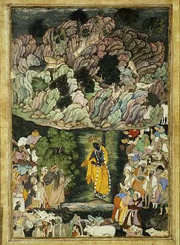

Krishna lifting Mount Goverdhan
Details
SUBJECT MATTER: This is a vertical painting by the artist, Miskin. "Harivamsa Purana"is from where the theme has been taken from. The painting has been based on the Lord Krishna story. The illustration depicts Lord Krishna lifting Mount Gaverdhan once on his little finger to give everyone including animals shelter from heavy rain because the rain was let loose by Indra who was furiious.
DESCRIPTION: It is a painting from the early years of rule of Akbar. In this painting, Krishna is center of the painting with bluish-black skin tone is lifting the whole mountain on his little, pinky finger. He is wearing his yellow garments which is called pitamber (yellow clothes). Mount Goverdhan is a multi-colored mountain with deer, monkeys, trees, flowers, shrubs and grass. You can see persian influence in the handling of the huge mountain in this painting. Under the lifted mountain, people, animals, cattles have been gathered to get shelter from the heavy rain, caused by the angry rain-god, Indra Dev. On top of the mountain, the a little dark blu sky is painted. Even under the mountain we can see dark blue sky. Lord Krishna has been painted in Virat roop which means large size.
HUMAN VALUES:
1.During happiness and sorrow, we hould always stay uniteed with our group of people.
2.Loyality for our team and obedience to our leader
3.Leader is responsible for its people
4.Mughal ruler Akbar got this Hindu theme painting, so one should respect and should have tolerance for other religions for harmony of all.